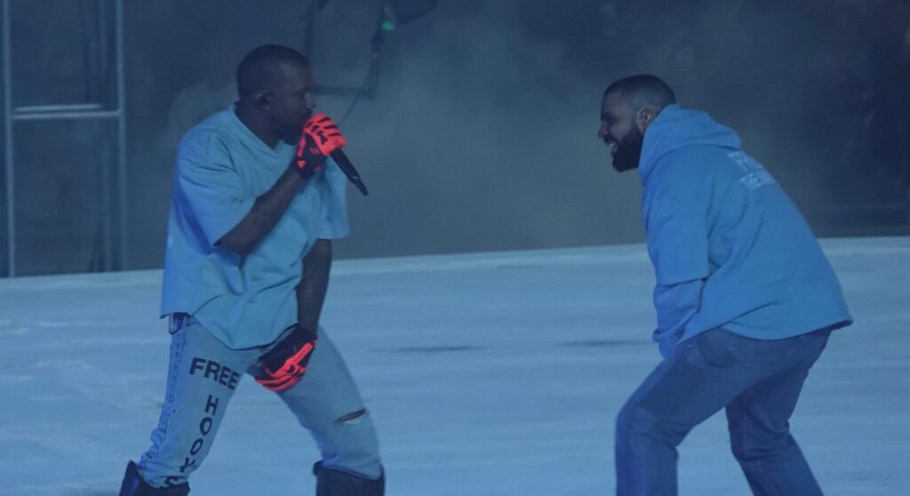

Step into the awe-inspiring realm of FutureFest, a music festival that will sweep you off your feet with its boundless creativity and mind-bending performances. Brace yourself for an electrifying experience that merges the worlds of music, technology, and innovation, where you'll witness the genius of artists like Kanye West, Drake, A$AP Rocky, and Playboi Carti.
FutureFest is a vibrant celebration of musical exploration and sonic experimentation. It brings together a breathtaking lineup of trailblazing musicians, visionary DJs, and cutting-edge producers who are redefining the very essence of music. From Kanye West's mesmerizing stage presence to Drake's chart-topping hits, from A$AP Rocky's captivating lyricism to Playboi Carti's energetic performances, the festival showcases a diverse range of talents that span genres and push the boundaries of artistic expression.
But FutureFest is more than just a stage for superstar artists. It's an immersive playground where music enthusiasts and industry professionals can dive headfirst into the latest advancements in music technology. Discover futuristic instruments, delve into innovative production techniques, and explore mind-bending audiovisual experiences through interactive installations, captivating workshops, and eye-opening demonstrations. Here, you'll have the opportunity to witness firsthand how technology is shaping the future of music.
At FutureFest, diversity and unity go hand in hand. The festival fosters a welcoming environment that embraces people from all walks of life, cultures, and backgrounds. It's a space where music becomes the universal language that brings everyone together. In this vibrant community, you'll forge connections, make lifelong friends, and celebrate the joy of shared musical experiences.
As the sun sets, the stage transforms into a mesmerizing spectacle of futuristic designs, pulsating lights, and stunning visuals. FutureFest is an immersive feast for the senses, where the music takes you on a ride into the future.
